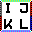

Overview
A Skybox is a cube without the bottom side which contains the environment around a scene, for example the sky or distant mountains. The cube is viewed from inside and usually only the upper half of the cube is seen, so it is enough that the upper half of the cube sides is textured.
In CryENGINE three square textures are used to define the cube sides. One for the top cube face (using suffix _5 in the filename) and two textures which contain the images of the four side faces (using prefixes _12 and _34).
The following images show the required layout of the sky textures:


Resulting hemisphere layout (looking upward into the sky)
Final result should look like this (without the letters):

Using a Static Skybox
In order to use a skybox instead of the dynamic HDR sky, go to the Environment tab in Sandbox and select a material in the SkyBox section which uses the Sky shader (not SkyHDR, as this will use the dynamic HDR sky).
You can apply any of the three skybox textures to the diffuse texture slot of the material. Because this is a simple cube texture rendering, the majority of shader/material options will have no effect on the skybox rendered. Just 100% opacity and a diffuse texture is all that is needed.
Tips
- Very soft gradients suffer from DXT compression a lot. Either you avoid compression (much more texture memory required) or you add some noise to the image. That can also benefit uncompressed textures.
- Painting textures with very soft gradients should be done with higher precision (e.g. Photoshop 16bit instead of 8bit).
- Based on memory constraints and target resolution, you should carefully decide on the compression format, whether mipmaps are on or off and the texture resolution.
- The rendering assumes that the pixels on the edges and corners are replicated on the other side. DXT compression is done for a 4x4 pixel block and that can cause further issues. Often this can be fixed by an artist.
- If your skybox textures are showing up very blurry when applied to your sky that is likely because they have mips applied. Be sure that you are saving your textures without any mip mapping applied.
- To learn how to create textures for a new skybox, see the .